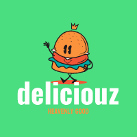

<div
  class="w-full flex gap-4 items-center justify-center bg-green-400 px-10 py-4 shadow-lg"
>
  <a
    class="font-bold text-[18px] tracking-[0.24px] px-4 py-2 rounded-full"
    routerLink="/receipts"
    routerLinkActive="active-router"
    [routerLinkActiveOptions]="{ exact: true }"
    >Receipts</a
  >
  <div class="w-[160px]"></div>
  
  <a
    class="font-bold text-[18px] tracking-[0.24px] px-4 py-2 rounded-full"
    routerLink="/chefs"
    routerLinkActive="active-router"
    [routerLinkActiveOptions]="{ exact: true }"
    >Chefs</a
  >
</div>
